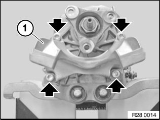
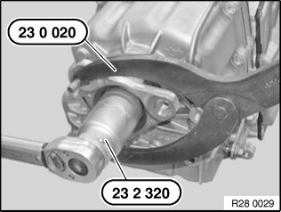
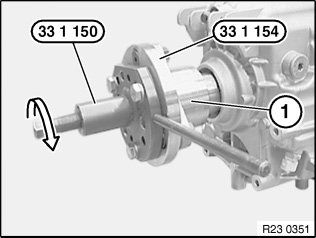
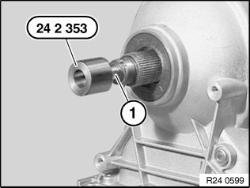
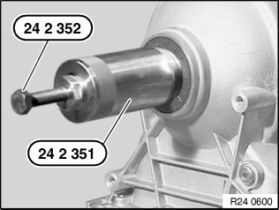
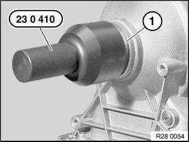
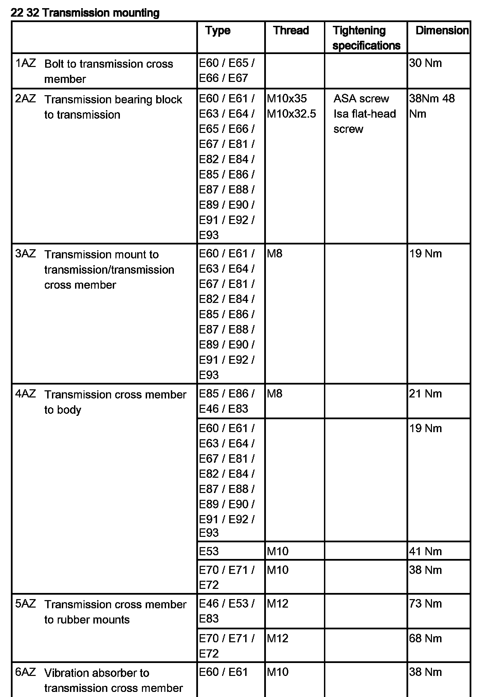

<!DOCTYPE html>
<html>
  <head>
    <title>28 00 060 Replacing Output Flange Radial Shaft Seal (GS7D36SG) — 2011 BMW 128i Coupe (E82) L6-3.0L (N52K) Service Manual | Operation CHARM</title>
    <meta name='description' content="Detailed repair manual for the 2011 BMW 128i Coupe (E82) L6-3.0L (N52K).">
    <link rel='stylesheet' href="../style.css">
    <meta name='viewport' content='width=device-width, initial-scale=1.0' />
  </head>
  <body>
    <div class='theme-colors header'>
      <div class='branding'><b>Operation CHARM</b>: Car repair manuals for everyone.</div>
<div class=breadcrumbs><a class='breadcrumb-part' href="../">Home</a> <b>&gt;&gt;</b> <a class='breadcrumb-part' href="../BMW/">BMW</a> <b>&gt;&gt;</b> <a class='breadcrumb-part' href="../BMW/2011/">2011</a> <b>&gt;&gt;</b> <a class='breadcrumb-part' href="../index.html">128i Coupe (E82) L6-3.0L (N52K)</a> <b>&gt;&gt;</b> <a class='breadcrumb-part' href="0.html">Repair and Diagnosis</a> <b>&gt;&gt;</b> <a class='breadcrumb-part' href="0.html#Transmission%20and%20Drivetrain/">Transmission and Drivetrain</a> <b>&gt;&gt;</b> <a class='breadcrumb-part' href="0.html#Transmission%20and%20Drivetrain/Automatically%20Shifted%20Manual%20Transmission%2FTransaxle/">Automatically Shifted Manual Transmission/Transaxle</a> <b>&gt;&gt;</b> <a class='breadcrumb-part' href="1116.html">Seals and Gaskets</a> <b>&gt;&gt;</b> <a class='breadcrumb-part' href="1116.html#Service%20and%20Repair/">Service and Repair</a> <b>&gt;&gt;</b> <a class='breadcrumb-part' href="10173.html">28 00 060 Replacing Output Flange Radial Shaft Seal (GS7D36SG)</a></div></div>
<div class="theme-colors floaty-message lemon-message">
  <b style="font-size: 1.5em; color: gold">Manuals through 2025 now available!</b>
  <br><br>
  Our trusted friends have launched a new website named LEMON, which has newer manuals. It also contains all the CHARM manuals.
  <br><br>
  LEMON is the spiritual successor to  CHARM, I recommend you try it!
  <br><br>
  Link: <a style='white-space: nowrap' href="../missing-page">lemon-manuals.la</a> or <a style='white-space: nowrap' href="../missing-page">lemon-manuals.org.ua</a>
  <br><br>
  (Some people have issue connecting. LEMON is investigating. For now, use Firefox or change your DNS server)
  <br><br>
  Or, hide this message: <a href="../missing-page">temporarily</a> or <a href="../missing-page">permanently</a>
</div>
<div class='main'>
<h1>28 00 060 Replacing Output Flange Radial Shaft Seal (GS7D36SG)</h1><b>28 00 060 Replacing output flange radial shaft seal (GS7D36SG)</b><br><br><span class='indent-2'>&#09;</span><b>Special tools required:</b><br><br><div class='oxe-image'></div><br><br><br><br><span class='indent-2'>&#09;</span><b>Important!</b><br><span class='indent-5'>&#09;</span>It is essential to adhere to conditions of absolute cleanliness.<br><span class='indent-5'>&#09;</span>Any dirty parts must be cleaned before the hydraulic cap is loosened.<br><span class='indent-5'>&#09;</span>After completion of work, check gearbox oil level.<br><span class='indent-5'>&#09;</span>Use only the approved transmission oil.<br><span class='indent-5'>&#09;</span>Failure to comply with this instruction will result in serious damage to the twin-clutch gearbox.<br><br><div class='oxe-image'></div><br><br><br><br><span class='indent-2'>&#09;</span><b>Necessary preliminary work:</b> <br><span class='indent-2'>&#09;</span>^<span class='indent-5'>&#09;</span>Remove underbody protection<br><span class='indent-2'>&#09;</span>^<span class='indent-5'>&#09;</span>Remove heat shields.<br><span class='indent-2'>&#09;</span>^<span class='indent-5'>&#09;</span>Remove exhaust system.<br><span class='indent-2'>&#09;</span>^<span class='indent-5'>&#09;</span>Support transmission from underneath.<br><span class='indent-2'>&#09;</span>^<span class='indent-5'>&#09;</span>Remove transmission cross member.<br><br><div class='oxe-image'></div><br><br><br><br><span class='indent-2'>&#09;</span>-<span class='indent-5'>&#09;</span>Remove propeller shaft.<br><span class='indent-2'>&#09;</span>-<span class='indent-5'>&#09;</span>Tasks are described in<br><span class='indent-5'>&#09;</span>Removing propeller shaft.<br><br><span class='indent-2'>&#09;</span><b>Note:</b><br><span class='indent-2'>&#09;</span>To rotate propeller shaft, unlock parking lock.<br><br><div class='oxe-image'></div><br><br><br><br><span class='indent-2'>&#09;</span>Release screws.<br><br><span class='indent-2'>&#09;</span>Remove transmission bearing block (1).<br><br><span class='indent-1'>&#09;</span>Tightening torque: 22 32 2AZ.<br><br><span class='indent-2'>&#09;</span>Grip output flange (1) with special tool 23 0 020.<br><br><div class='oxe-image'></div><br><br><br><br><span class='indent-2'>&#09;</span>Release nut with special tool 23 2 320.<br><br><span class='indent-2'>&#09;</span>Tightening torque: 28 10 14AZ.<br><br><span class='indent-2'>&#09;</span><b>Installation note:</b><br><span class='indent-2'>&#09;</span>Replace nut and secure with Loctite 243.<br><br><div class='oxe-image'></div><br><br><br><br><span class='indent-2'>&#09;</span>Detach output flange (1) with special tool 33 1 150 and adapter plate 33 1 154 from output shaft.<br><br><div class='oxe-image'></div><br><br><br><br><span class='indent-2'>&#09;</span>Attach special tool 24 2 353 to output shaft (1).<br><br><span class='indent-2'>&#09;</span>Graphic shows: Automatic transmission<br><br><span class='indent-2'>&#09;</span>Screw in special tool 24 2 351 until it is firmly connected with radial shaft seal.<br><br><div class='oxe-image'></div><br><br><br><br><span class='indent-2'>&#09;</span>Pull out radial shaft seal by screwing in special tool 24 2 352.<br><br><span class='indent-2'>&#09;</span>Graphic shows: Automatic transmission<br><br><div class='oxe-image'></div><br><br><br><br><span class='indent-2'>&#09;</span>Apply oil to the sealing lip of radial shaft seal (1). Drive in radial shaft seal (1) with special tool 23 0 410 as far as it will go.<br><br><span class='indent-2'>&#09;</span>Graphic shows: Automatic transmission<br><br><h3>`�s:</h3><div class='oxe-image'></div><br><br><br><h3>���:</h3><div class='oxe-image'></div><br><br><br></div>
<div class="theme-colors footer">
  <i>pro multis</i> · <a href="../about.html">About Operation CHARM</a>
</div>
<script src="../script.js"></script>
</body>
</html>
